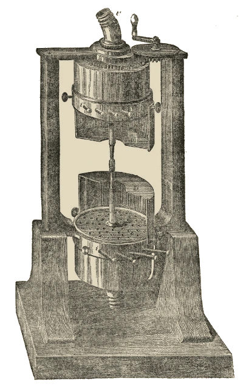

BONGSOFT / INSTRUMENT 01
BongDrums
Eleven synthesized voices. A sixteen-step room to work in.
Browser instrument · V6 synthesis
Pattern
Audio is off
Edit
Ready AJump to steps
Tap steps to cycle off → hit → accent. Use arrow keys to navigate the grid. Tap a voice name to audition it, or M to mute its audio. Editing A/B never changes which bank plays. Queue a bank to switch on the next bar. Press Space outside the controls to play or stop.
Share both patterns .txt
VOICE REGISTER
Sound
Share selected drum preset .txt
STEREO RETURN
Drum bus
Per-pad reverb and delay returns feed the four V6 processors.
Comp Limit
CONTROL VOLTAGE
Modulation
Two independent LFOs. Route either to a pad’s level, before the dry mix and effect sends. Both can run together. Sync restarts with Play; free rate keeps cycling.